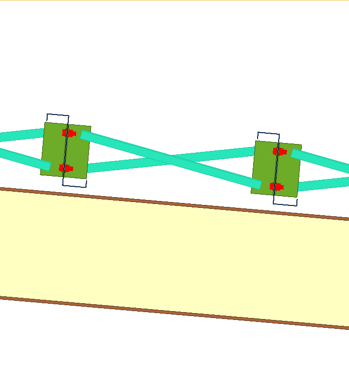
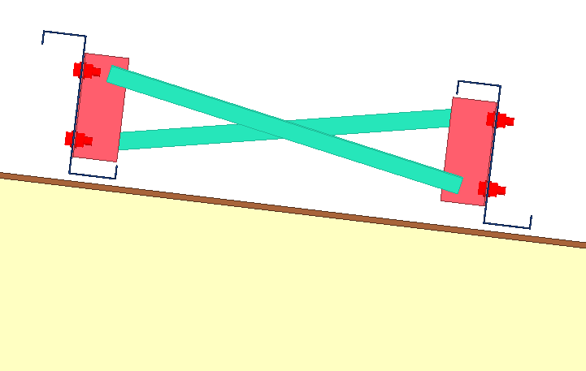
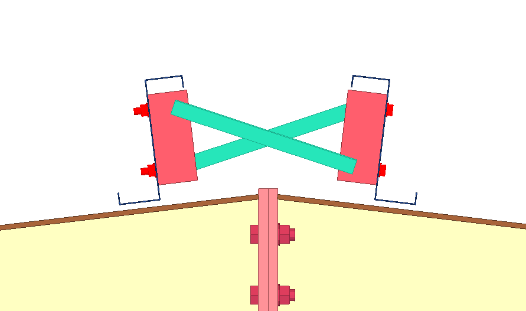
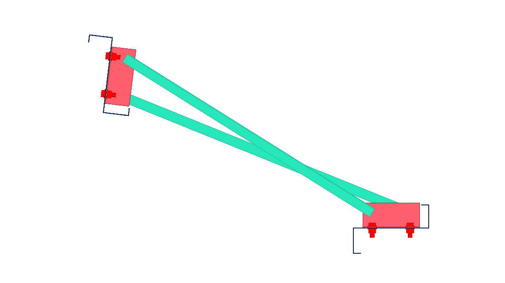
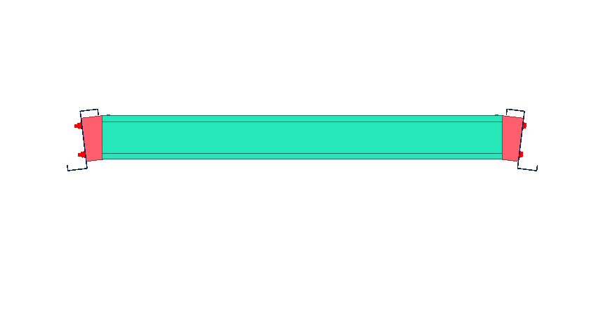
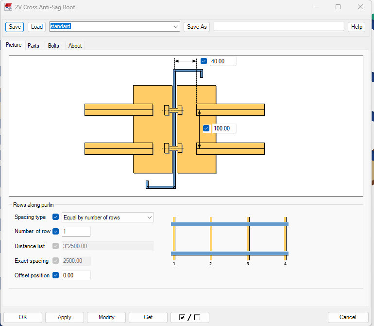
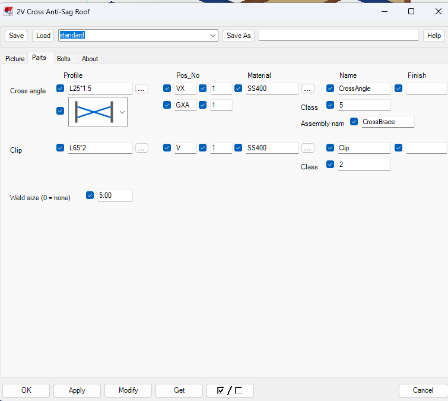
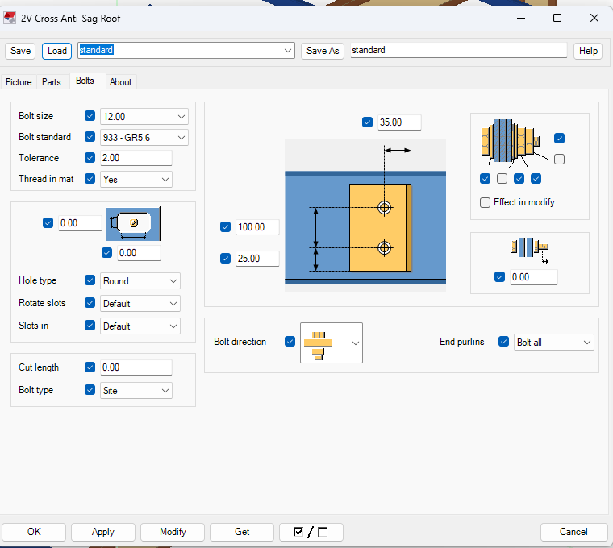

2V Cross Anti-Sag Roof – giằng chéo chữ X giữa các xà gồ
Chọn các xà gồ liên tiếp trên mái, component tự dựng giữa từng cặp xà gồ kề nhau một cụm giằng chữ X: hai thanh V bằng thép góc, klip bắt vào bụng xà gồ và bu-lông. Một gói .tsep, cài được trên Tekla 2016 – 2026.

1. Component này làm gì
Giằng xà gồ chữ X (anti-sag) thường được vẽ tay từng cụm: dựng thép góc chéo, hàn klip, khoan lỗ, bắt bu-lông, rồi lặp lại cho mọi khoảng xà gồ. 2V Cross làm toàn bộ việc đó trong một lần chạy:
- dựng hai thanh V bằng thép góc bắt chéo giữa hai xà gồ kề nhau (tên, prefix, class, assembly theo cài đặt);
- dựng klip áp đúng mặt bụng từng xà gồ, hàn thanh V vào klip;
- khoét lỗ và dựng bu-lông (bu-lông, long đen, đai ốc chọn được) xuyên klip và bụng xà gồ;
- chia một hoặc nhiều hàng giằng dọc xà gồ theo khoảng cách đều, khoảng cách chính xác hoặc danh sách khoảng cách;
- tính hình học theo pháp tuyến bụng của từng xà gồ, nên chạy đúng cả khi hai bên mái đối xứng.
2. Một số vị trí giằng ứng dụng component
Cụm 2V Cross dùng được ở những vị trí xà gồ cần chống võng, ví dụ:




3. Cài đặt
- Đóng hẳn Tekla Structures (kể cả tiến trình chạy nền) rồi tải gói
iVidLab.AntiSag2VCross_1.20.tsepở mục Tải về. - Mở Extension Manager của Tekla, chọn Install / Import và chỉ tới file
.tsepvừa tải. - Mở Tekla, vào Applications & components → nhóm iViDLab → 2V Cross Anti-Sag Roof.
⚠️ Luôn đóng Tekla trước khi cài hoặc thay gói. Tekla giữ DLL đã nạp đến khi đóng hẳn, nên cài khi Tekla đang chạy có thể vẫn chạy bản cũ.
4. Cách dùng
- Mở component 2V Cross Anti-Sag Roof từ catalog, chỉnh các tab (xem mục 5) hoặc dùng mặc định.
- Chọn lần lượt các xà gồ cần giằng (theo trình tự mái).
- Nếu Tekla hỏi có chọn cấu kiện tham chiếu (dầm/kèo) hay không, trả lời theo nhu cầu rồi chọn cấu kiện đó.
- Component dựng cụm chữ X giữa mọi cặp xà gồ kề nhau. Muốn sửa, đổi thông số trong dialog rồi Modify.
5. Các tab trong dialog
Picture – bố trí giằng
Hình mặt cắt vẽ theo kiểu bitmap của Tekla, hai klip đối xứng hai bên bụng xà gồ. Ở đây đặt:
- V end to web – khoảng cách đầu thanh V tới bụng xà gồ (mặc định 40);
- V end spacing – khoảng cách giữa hai thanh V ở đầu thanh (mặc định 100; đặt 0 thì hai thanh V song song, trùng nhau và kẹp hai mặt chân klip);
- Số hàng và cách chia – chia đều, khoảng cách chính xác (mặc định 2500) hoặc danh sách khoảng cách;
- Offset position – dời cả dãy hàng dọc xà gồ.

Parts – thép góc, klip, hàn
- V layout (combo hình): 2 V bắt chéo (chữ X), 2 V song song chạy thẳng, hoặc 1 V chạy thẳng ở giữa hai xà gồ;
- Thanh V: tiết diện (mặc định L25*1.5), vật liệu SS400, tên CrossAngle, prefix VX/1, class 5;
- Cụm (assembly): prefix GXA/1;
- Klip: tiết diện (mặc định L65*2), vật liệu SS400, prefix V/1, class 2;
- Hàn thanh V vào klip: 5 mm.
- Thanh V là thép góc thì chân ngang nằm phía trên; là thép máng (C/U) thì lưng áp vào klip. Klip thép góc không đều cạnh lấy đúng theo số trong tên profile (số thứ hai là chân áp bụng xà gồ) và đối xứng gương hai bên bụng.

Bolts – bu-lông, kiểu tab Bolts của Tekla
- Đường kính, tiêu chuẩn (mặc định 12,
933 - GR5.6), tolerance, ren, Site / Workshop (mặc định Site), extra length, kiểu lỗ, rotate; - Bolt spacing 100, Bolt to heel 35 (đo từ gót klip), Clip edge 25;
- Chọn bộ phận bu-lông: Bolt, Washer 1/2/3, Nut 1/2 ngay trên hình; ô Effect in modify bật/tắt chung;
- Bolt direction Normal / Flipped;
- End purlins – xà gồ đầu/cuối của dãy: Bolt all, No start, No end, No side (cả hai đầu). Ở xà gồ được chọn, component chỉ khoét hai lỗ trên klip, không bắt bu-lông vào xà gồ.

✅ Chiều dài cắt (cut length) của bu-lông tự tính phủ cả chồng klip + bụng + klip, nên bu-lông xuyên hết cả hai klip kể cả khi klip dày. Không cần nhập tay.
6. Bộ mặc định
| Nhóm | Giá trị mặc định |
|---|---|
| Bố trí | V end to web 40, V end spacing 100, 1 hàng chia đều, exact 2500, offset 0 |
| Thanh V | L25*1.5, SS400, VX/1, cụm GXA/1, class 5 |
| Klip | L65*2, SS400, V/1, class 2, hàn 5 |
| Bu-lông | Ø12 933 - GR5.6, tolerance 2, ren Yes, Site, spacing 100, to heel 35, clip edge 25 |
| Bộ phận | Bolt + Washer 1 + Washer 3 + Nut 1, hướng Normal, End purlins = Bolt all |
Mọi giá trị đổi được trong dialog và lưu thành bộ cài đặt riêng bằng nút Save / Load của Tekla. Lưu ý: nếu model có file standard riêng trong thư mục attributes thì Tekla nạp file đó trước file của gói.
2V Cross Anti-Sag Roof – X bracing between purlins
Pick consecutive purlins on the roof and the component builds an X brace between each pair of adjacent purlins: two angle diagonals, clips fixed to the purlin webs, and bolts. One .tsep package for Tekla 2016 – 2026.
1. What it does
X anti-sag bracing is usually drawn by hand, bay by bay: place the diagonals, add clips, cut holes, bolt everything, repeat. 2V Cross does all of it in one run:
- builds two V diagonals from angle sections between adjacent purlins (name, prefix, class and assembly from the settings);
- builds clips flush against each purlin web and welds the diagonals to them;
- cuts holes and builds the bolts (bolt, washers, nuts selectable) through clip and web;
- spreads one or more rows along the purlin by equal spacing, an exact spacing or a spacing list;
- computes the geometry from each purlin's own web normal, so it also works on symmetric roofs with purlins on both slopes.
2. Where the component is used
The 2V Cross assembly fits wherever purlins need anti-sag bracing, for example:
3. Installation
- Fully close Tekla Structures (including background processes), then download
iVidLab.AntiSag2VCross_1.20.tsepfrom Download. - Open Tekla's Extension Manager, choose Install / Import and select the downloaded
.tsep. - Start Tekla and open Applications & components → group iViDLab → 2V Cross Anti-Sag Roof.
⚠️ Always close Tekla before installing or replacing a package. Tekla keeps loaded DLLs until it exits, so installing while it runs can leave the old version active.
4. How to use
- Open 2V Cross Anti-Sag Roof from the catalog and adjust the tabs (section 5) or keep the defaults.
- Pick the purlins to brace, in roof order.
- If Tekla asks for a reference member (beam/rafter), answer as needed and pick it.
- The X assembly is created between every pair of adjacent purlins. To change it, edit the dialog values and press Modify.
5. Dialog tabs
Picture – layout
- V end to web – distance from the V end to the purlin web (default 40);
- V end spacing – gap between the two V ends (default 100; 0 makes the two bars run parallel and coincide, one on each face of the clip leg);
- Rows and spacing type – equal, exact (default 2500) or a list;
- Offset position – shifts the whole set of rows along the purlin.
Parts – angles, clips, weld
- V layout (image combo): 2 V crossed (X), 2 V parallel and straight, or 1 V straight between the two purlins;
- V diagonals: profile (default L25*1.5), SS400, name CrossAngle, prefix VX/1, class 5; assembly prefix GXA/1;
- Clip: profile (default L65*2), SS400, prefix V/1, class 2;
- Weld diagonal to clip: 5 mm.
- Angle diagonals have the horizontal leg on top; channel (C/U) diagonals lie with their back against the clip. Unequal-leg clips follow the numbers in the profile name (second number = leg flat on the purlin web) and are mirrored on the two sides of the web.
Bolts – laid out like Tekla's Bolts tab
- Size, standard (default 12,
933 - GR5.6), tolerance, thread, Site / Workshop (default Site), extra length, hole type, rotate; - Bolt spacing 100, Bolt to heel 35 (from the clip heel), Clip edge 25;
- Bolt parts on the picture: Bolt, Washer 1/2/3, Nut 1/2; Effect in modify toggles them together;
- Bolt direction Normal / Flipped;
- End purlins – Bolt all, No start, No end, No side (both ends). At the chosen end purlin the component only cuts two holes in the clip and does not bolt into the purlin.
✅ The bolt cut length is calculated to span the whole clip + web + clip stack, so the bolt passes through both clips even for thick clips. No manual entry needed.
6. Defaults
| Group | Default |
|---|---|
| Layout | V end to web 40, V end spacing 100, 1 row equal, exact 2500, offset 0 |
| V diagonals | L25*1.5, SS400, VX/1, assembly GXA/1, class 5 |
| Clip | L65*2, SS400, V/1, class 2, weld 5 |
| Bolts | Ø12 933 - GR5.6, tolerance 2, thread Yes, Site, spacing 100, to heel 35, clip edge 25 |
| Parts | Bolt + Washer 1 + Washer 3 + Nut 1, direction Normal, End purlins = Bolt all |
Everything can be changed in the dialog and saved as your own set with Tekla's Save / Load. Note: if the model has its own standard file in its attributes folder, Tekla loads it before the package's file.
Tải vềDownload

Nhóm Zalo người dùng iViDLabiViDLab user group on Zalo
Quét mã QR hoặc bấm nút bên cạnh để vào nhóm: hỏi đáp khi sử dụng, báo lỗi và nhận thông báo bản cập nhật mới.
Scan the QR code or use the button to join the group: usage questions, bug reports and new release announcements.
Liên hệ iViDLabContact iViDLab
Theo dõi fanpage Facebook hoặc gửi email để được hỗ trợ và góp ý.
Follow the Facebook page or send an email for support and feedback.